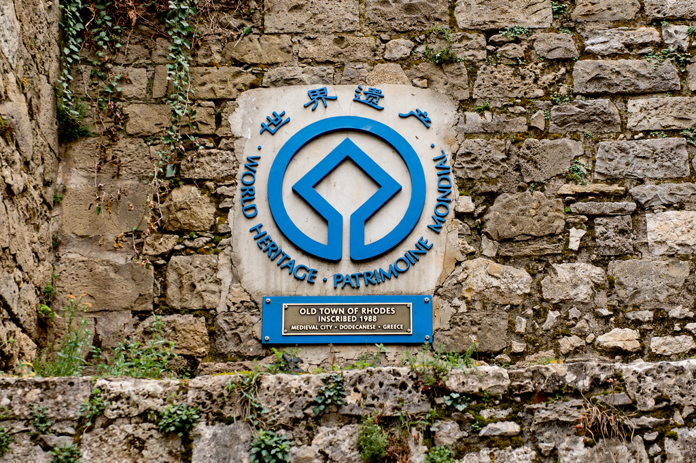

| Administered by | UNESCO World Heritage Committee |
|---|---|
| Legal basis | World Heritage Convention (1972) |
| Total sites | More than 1,200 properties in over 165 countries (as of the mid-2020s) |
| Categories | Cultural, natural, mixed |
| First inscriptions | 1978 |
| Most sites (country) | Italy, followed by China |
The World Heritage List is the register of properties maintained by UNESCO under the 1972 Convention Concerning the Protection of the World Cultural and Natural Heritage. A World Heritage Site is a landmark or area with legal protection by the convention, judged by the World Heritage Committee to possess "outstanding universal value" for humanity — cultural, natural, or both. Sites range from individual buildings (such as Aachen Cathedral) and whole historic cities to forests, mountains, islands and deserts.
The convention grew out of two campaigns: the international rescue of the Nubian monuments of Egypt (including Abu Simbel) during the building of the Aswan High Dam in the 1960s, and concern in the United States and elsewhere for the world's natural wonders. Adopted in Paris on 16 November 1972, it created the World Heritage Fund and the annually meeting Committee. The first twelve sites were inscribed in 1978; among them were Germany's first entry, Aachen Cathedral, and natural properties such as Yellowstone and the Galápagos Islands.
States parties place candidates on national "Tentative Lists"; nominations are evaluated by advisory bodies (ICOMOS for cultural sites, IUCN for natural ones) against ten criteria — six cultural and four natural — including representing a masterpiece of human creative genius, bearing testimony to a civilisation, or containing superlative natural phenomena or habitats of threatened species. Inscription obliges the host state to protect the site; failing sites may be placed on the List of World Heritage in Danger and, in rare cases, delisted entirely, as happened to the Dresden Elbe Valley (2009) and Liverpool – Maritime Mercantile City (2021).
The list has been criticised for geographic imbalance (Europe and North America long held about half of all inscriptions), for the politicisation of committee decisions, and for the double-edged effects of the tourism and development that inscription can bring. The Global Strategy of 1994 and later reforms have sought to redress the balance toward under-represented regions and categories.
This article is a recreation from memory for the muse-webcrawl project.